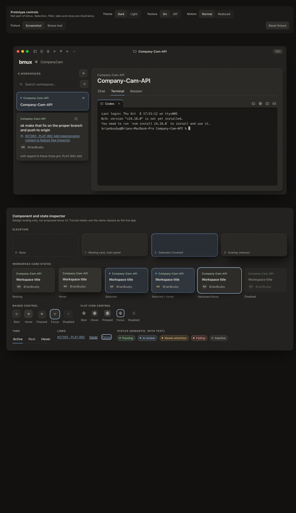
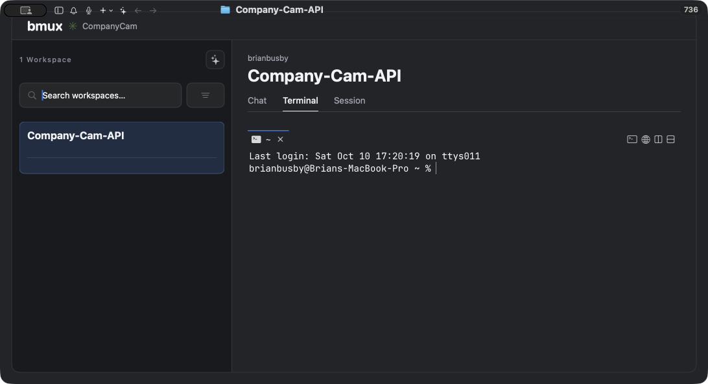
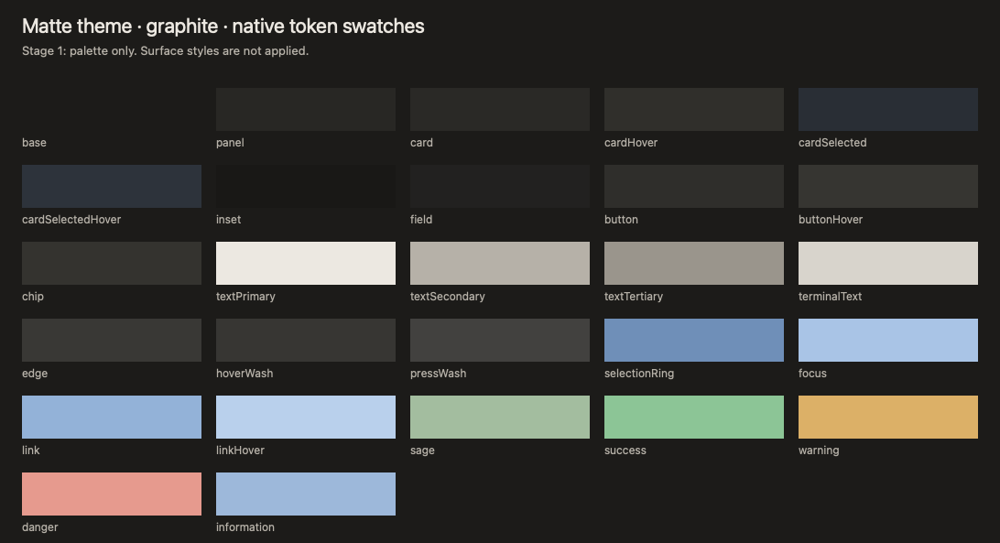
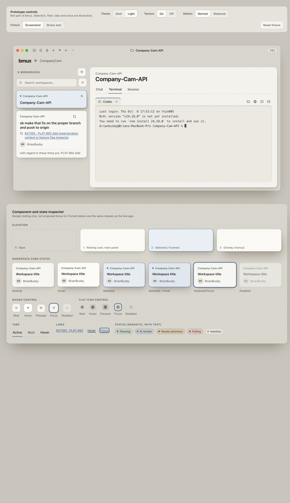
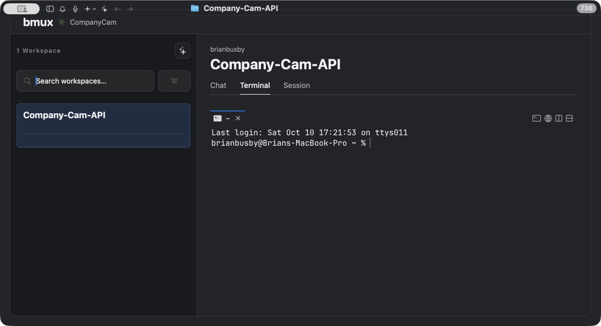
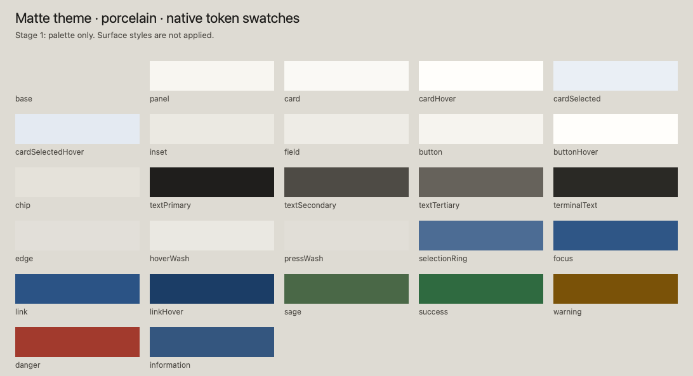

Native app baselines and target, at 1092 × 593. Scroll horizontally to compare at 1:1. The target is cropped from the supplied prototype image; its tooling is excluded. No surface integration is present in stage 1.





